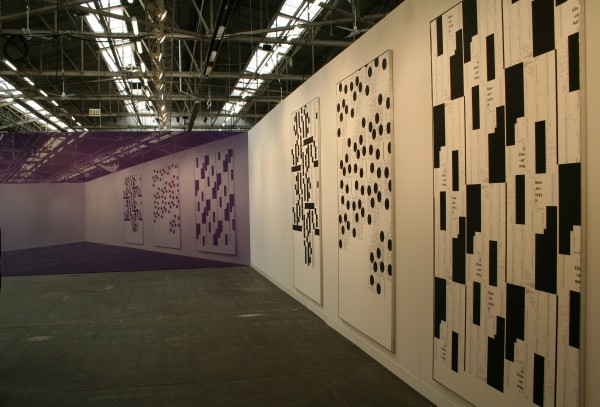

-
The Frozen City
by Rachel Wetzler March 17, 2012
Michael Riedel 's installation for David Zwirner. Image by Rachel Wetzler.
For his Cartier Award commission at the 2010 Frieze Art Fair, British artist Simon Fujiwara created the installation Frozen, a mock-archaeological dig revealing an ancient lost city found underneath the site of the fair. Remnants of what he dubbed “The Frozen City” were spread throughout the its grounds at Regent’s Park — the home of a patrician patroness of the arts; a brothel; a refectory specializing in the city’s delicacy — human flesh; the tomb of a young artist who met an untimely death under suspicious circumstances; the Macellum, the city’s art market, sardonically described as “the most important public space in the city” — each alluding to the decadence of the environment. Walking around this year’s Armory Show, I couldn’t help but think of Fujiwara’s installation, wondering what conclusions some hypothetical anthropologist of the future might draw from the fair and its mixed cues, were she or he to stumble upon its ruins.
For one, what to make of all the objects? Looking around the fair, one would be hard-pressed to find evidence of the participatory, socially engaged, project-based practices that have dominated in recent years. This comes as no surprise — it’s hard to hang a performance over your sofa — but it speaks to what feels like an increasing gulf between the art world of the fairs and the art world at large. The newly-inaugurated “Armory Performance” series was a weak nod in this direction, though of the four programs, two of them could only be seen on Wednesday during the VIP preview. Based on fair ubiquity alone, the unacquainted might think that Julian Opie and Fernando Botero were our culture’s most prized artists, even though the work of such artists is trotted out from the depths of gallery inventories for the fairs, never to be seen again during the rest of the year. Painting reigns again, briefly. Though it returned, this year, with forty-six fewer booths than last, the Armory Show still feels endless; each gallery’s offerings start to look alike.
Further, how to respond to booths that aimed to critique the fair’s milieu? At Winkleman Gallery, a cardboard cutout of artist Jennifer Dalton holding a cocktail stood in front of a blown-up photograph of an exclusive gala; the gallery offered a limited edition shopping bag to any collector willing to give up his or her Armory VIP card, a riff on Dalton’s series The Collector-ibles (2006), miniature figurines of big-name art collectors proffering shopping bags labelled with the type of art they tend to collect — “Contemporary,” “Asian Art,” “Old Masters,” and so on. Giving over the booth to a critique of fair culture seemed like a bold move until I asked a representative of gallery if they had anything for sale — they did, of course. It’s hard not to read such a gesture as more gimmick than incisive critique. Pointing out that an art fair caters to the wealthy — that it is more shopping mall than exhibition space — is so obvious that it barely needs stating. A more interesting take might have been an acknowledgement by both artist and dealer that the fairs have become a necessary evil for those trying to stay afloat, that a successful Armory Week can put a gallery in the black for the year, enabling a more ambitious, but perhaps less commercially viable, program.
This lack of self-awareness was seen even more acutely in the booth of Modern Magazine at Pier 92, given over to SoHo’s Cristina Grajales Gallery, which specializes in design. Placed under a garish chandelier, with no sense of irony whatsoever, were a series of wall-hangings-cum-chairs by Chilean artist Sebastian Errazuriz bearing slogans culled from Occupy Wall Street signs. The gallerist waxed on about the artist’s avowed interest in Occupy Wall Street and his sympathy for the occupiers: the idea behind the series was that the words of the 99% printed on the chairs, once purchased by collectors, would “occupy” the homes of the 1%, at $2,500 apiece. The project was so woefully misguided that it hardly seemed worthwhile to point out the dubious ethics of co-opting such slogans at all, let alone to offer them for sale at an event devoted to unbridled commerce.
The Armory’s “Open Forum” series of talks offered its own set of perplexing contradictions: a panel on Situationist Asger Jorn; more than one on art, class, and social change, with titles like “Enduring Utopias” and “The Efficacy of Art to Incite Social Change”; another on alternative, non-commercial spaces, featuring Brooklyn’s Cleopatra’s and Copenhagen’s IMO — all worthwhile topics, to be sure, but how to resolve the content with the context? Walking around Pier 92 one afternoon, I overheard a well-dressed man complaining about the crowds to a dealer at an upmarket London gallery: “Who are all these people?” he asked, with an exasperated tone. “Most of them barely look like they could afford the $20 to get in the door.” Is it possible to have a meaningful discussion about the ability of art to affect social change in the same building as such an exchange? Can we talk about structural inequality in the presence of a VIP lounge?
My favorite display at the Armory was one that embraced, or at least acknowledged, its context: At David Zwirner’s booth, the German artist Michael Riedel papered one wall with a purple-hued photograph of the booth itself, giving the illusion, momentarily, that it had doubled in size. During the vernissage, it was reinstalled in turquoise, a gesture curiously reflective of the workings of the fair: when I returned to the Armory for a second visit once the show had opened to the public, I noticed that several booths had turned over their displays entirely, presumably swapping out work that had already sold on the first day. Also on view at Zwirner were three of Riedel’s “Poster Paintings,” for which the artist reconfigures the text of art world press materials, printed matter, and ephemera — for instance, every mention of his name on the MoMA website; the transcript of his 2011 performance “Time Bank Robbery” — into stark, graphic compositions in InDesign, before silkscreening them on canvas. The work seems less like heavy-handed critique of the art world’s institutions than an investigation into their workings, the garbled text recalling the empty, elliptical language of so many press releases.
On the opposite end of the art fair spectrum was the Dependent, a one-day-only affair at a budget hotel on the Lower East Side, featuring some of the more adventurous small galleries and artist-run spaces from New York and farther afield. The atmosphere was decidedly convivial, with several booth attendants found casually lounging on the hotel beds — indeed, Canada staged a recreation of John Lennon and Yoko Ono’s infamous 1969 “Bed In” protesting the Vietnam War — more likely to be chatting with friends and visitors than negotiating the terms of a sale. Artwork covered virtually every available space, displayed on walls, television screens, beds, and bathtubs, with many of the participating artists responding playfully to the setting, as in Michael Bell-Smith’s schlocky photographs of musical instruments at Foxy Production, which were in fact reproductions of stock images from Getty Images purchased by the artist after he saw them in his room during a hotel stay of his own. Less an art fair, in any meaningful sense, than an opportunity for artists and spaces shut out of the Armory frenzy to make themselves visible, it was the one place I visited over the course of the week where the art world seemed more about art than money.